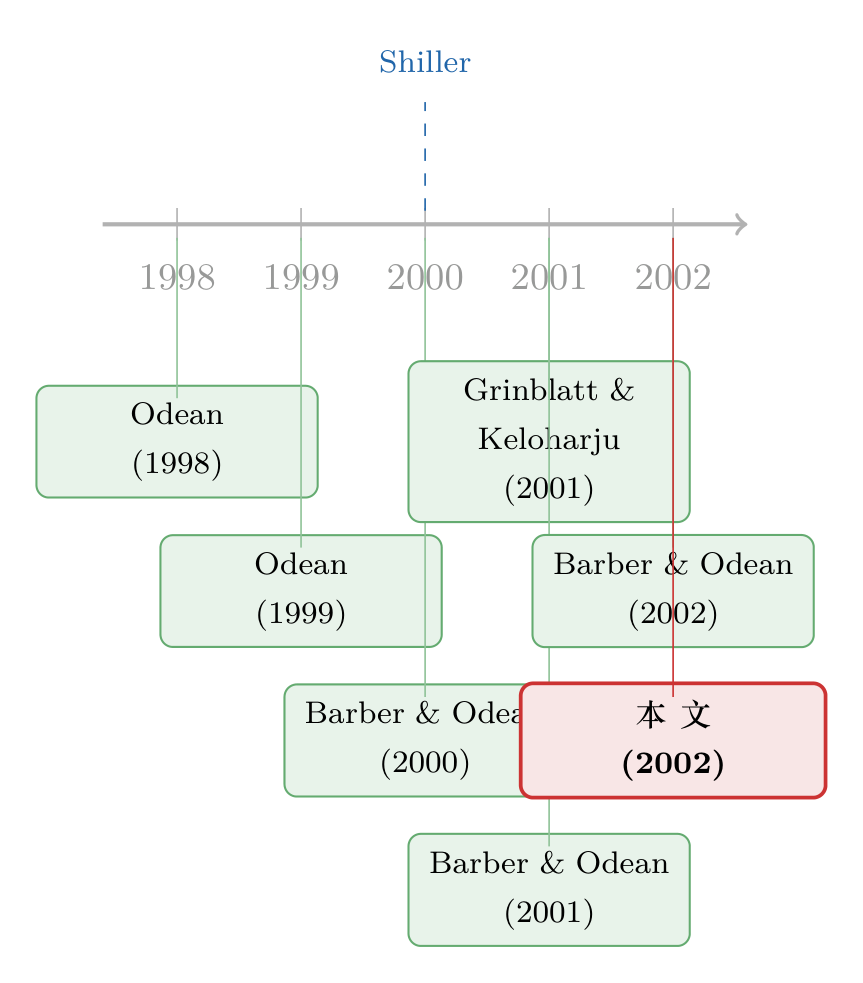

把炒股的「超市」搬到家门口：交易翻了一倍，钱却没多赚一分
本文读的是 Choi, Laibson & Metrick (2002, Journal of Financial Economics)：他们利用两家大公司 401(k) 计划在 1998 年 8 月上线网络交易渠道这一外生事件，发现开通 18 个月后，交易频率相对一组没有网络渠道的公司翻了一倍；但因为网上的单子更小、网上交易者的账户也更小，换手率只涨了一半；最关键的是——这些「凭空多出来」的交易，没有给投资者带来任何可见的好处。
1 一桩没有「物证」的指控
世纪之交那几年，互联网几乎成了金融市场一切罪状的嫌疑人。过度交易、羊群效应、波动率飙升、过度冒险，乃至 1990 年代末那个吹得越来越大、又在 2000 年轰然破裂的「互联网泡沫」——人们差不多把账都记到了网上交易（online trading）的头上。SEC 主席 Levitt 接连发表声明，警告网络交易者可能「伤人伤己」（Levitt, 1999a, b）。
可是，指控声浪铺天盖地，硬证据却少得可怜。
这正是本文作者要追问的：在给互联网定罪、给政策画押之前，有几个最基础的问题必须先回答清楚——互联网本身，到底有没有让人交易得更多？如果有，多了多少？它有没有改变交易者的业绩？
注意这里的措辞：「互联网本身」。难就难在这个「本身」上。那几年股市波动加大、整体交易量本就一路上行，你看到上网的人交易暴增，可能只是因为所有人都在那段时间交易暴增。要把互联网这一根因素从时代背景里干净地剥出来，需要一个近乎实验室的设定。
2 一个开在一英里外的超市
作者给了一个我特别喜欢的类比，几乎是全文的灵魂。
设想一个小镇，居民们一向要开车 20 英里去采购，现在镇子一英里外开了家新超市。会发生什么？很自然地，典型居民会去得更勤、每次买得更少——因为「跑一趟」的成本骤降了。如果第一次去这家新店因为某些原因格外麻烦，那么平均的购物模式会缓慢地调整，过一段时间才逼近新均衡。而如果新超市把货架摆放方式换了，连人们购物篮的构成也会跟着变。
把「开通网络交易渠道」放进这个类比里，一切都对上了：互联网改变的，是投资者面对的交易成本——在本文的设定里，这个成本不是手续费（401(k) 计划里的交易不收任何直接费用），而纯粹是下单要花的时间成本。成本一降，交易的频率和规模就该随之改变。
资产交易比买菜更有意思的地方在于：它能影响资产价格，并最终影响资本的配置。所以「上网让人多交易了多少」不只是个行为学问题。
接着，一个自然的问题是：上哪儿去找一个「超市突然搬到家门口」的干净实验？
3 识别策略：两家公司、一组对照、一条会拐弯的回归线
作者的数据来自 Hewitt Associates——一家为众多企业 401(k) 计划提供管理服务的大公司。借助它，作者锁定了两家最近才给 401(k) 计划开通网络访问的大公司，代号 Alpha 与 Omega，二者都在 1998 年 8 月上线网络渠道，各自有约三年的逐笔交易数据。
这里的「干净」是刻意经营出来的。为了把选择偏差压到最低，作者做了几件事：
- 截至 2000 年 1 月，Hewitt 的大客户里不到一半开通了网络交易——样本不是「赶时髦的那批」；
- 要求 Hewitt 挑出那些在网络上线前后最少改动计划规则的公司（投资菜单、匹配缴款规则、参与资格等任何变动都会污染识别）；
- 特别要求 Hewitt 不要事先计算或筛查这些公司的网络交易水平，避免「按使用模式挑公司」；
- 要求入选公司在网络上线前后各有至少一年数据。
但光有「前后对比」还不够——前面说了，那几年是大趋势。于是真正关键的一步是对照组。Hewitt 编制了一个 401(k) IndexTM，用 40 家大公司的资产类别间交易活动来度量市场整体的交易热度。作者从中剔掉到样本期末已经开通网络渠道的 13 家、以及晚于 1997 年 8 月 4 日才入样的 10 家，留下 17 家始终没有网络渠道的公司，按日取平均，构造出 Non-Web Index 这个对照变量，塞进回归。
有了「处理组（Alpha/Omega）+ 干净对照组」，这本质上就是一个事件研究式的双重差分（difference-in-differences, DiD）。模型写成：
其中 \(\text{Web}_{it}\) 是网络可用时取 1、否则取 0 的虚拟变量，\(\text{Time}_{it}\) 是公司 \(i\) 距网络上线的天数，\(\varepsilon_{it}\) 是（可能自相关的）误差项。若 \(\alpha_{iw}\) 与 \(\beta_{iw}\) 都为零，则没有网络效应。作者用 Newey–West (1987) 的方法处理误差的自相关。
这个设定的妙处，全在 \(\alpha_{iw}\) 和 \(\beta_{iw}\) 的分工上：前者捕捉「开通即跳」的水平效应，后者捕捉「逐步渗透」的斜率效应。回到超市类比——如果第一次去新店很麻烦，你预期的不是 \(\alpha_{iw}\) 一下子很大，而是 \(\beta_{iw}\) 把交易量沿时间慢慢推上去。后面会看到，数据恰恰是这副样子，而这一点反过来又给「上线时点是外生的」提供了佐证。
作者很诚实：Alpha 和 Omega 毕竟是自己选了何时上线，所以这并非纯粹随机的「自然实验」。但他们与 Hewitt 反复求证，上线动机是「更好地与参与者沟通、让人更方便查账户」，并非冲着交易需求去的；加上后文「开通后并无即时冲击」的发现（\(\alpha_{iw}\) 不显著），都指向上线时点并未被参与者的交易需求所驱动。
左手边的 \(y\) 有三个度量，这三把尺子的差别，是后面破解谜题的钥匙：
- Trades——当天有交易的参与者占比（「交易频率」，单位是百分比）；
- Turnover——当天交易总额 ÷ 计划总余额（「换手率」），它不在乎你是在资产类别之间搬钱还是类别之内换基金，也不做轧差；
- Company Index——只算资产类别之间的净换手，构造方式与对照组 Non-Web Index 完全对齐，便于直接比。
4 数据：被退休储蓄「驯服」过的交易者
先把两家公司的底子摆出来。Alpha 有一万多名参与者、11 个投资选项、不含公司股票、权益占比 75.6%、平均年龄 40.7 岁、平均账户余额 \$68,202；Omega 则大得多，五万多名参与者、36 个投资选项、含公司股票（占比 6.6%）、权益占比 40.8%、平均年龄 52.8 岁、平均余额 \$112,456。
要紧的是先认清：这里的「交易」是什么。它不是你想象的炒股票，而是参与者把已有计划余额在不同投资选项间做的 direct transfer（直接划转，即资产再配置/择时）。两家计划里，整个样本期内分别只有 41%、45% 的人至少交易过一次——这是一群被退休储蓄场景驯服得极其「佛系」的投资者。正因如此，任何「翻倍」都是从一个很低的基数上长出来的。
来看 Table 1 最后几行那组数字，它几乎把答案剧透了：
- Alpha：网络上线前人均月交易 0.0564 笔，上线后 0.1285 笔——翻了一倍还多；其中网上交易 0.0666 笔/月，24% 的人至少在网上交易过一次。
- Omega：上线前 0.0844 笔，上线后 0.1407 笔；网上 0.0597 笔/月，15% 的人上过网交易。
请盯住一个巧合：「上线后 − 上线前」≈「网上交易量」。Alpha 是 0.1285 − 0.0564 = 0.0721 ≈ 0.0666；Omega 是 0.1407 − 0.0844 = 0.0563 ≈ 0.0597。多出来的交易，几乎整整一份来自网络渠道。当然，这只是描述性的巧合，真正的因果还要回归说话。
那么，谁先上的网？作者对「上线后至少交易过一次」的人做了一个二元 logit，估计他们「在网上交易至少一次」的可能性。结论一点都不意外：年轻、有钱、男性是早期采用者。Alpha 的男性虚拟变量系数 0.4093（标准误 0.0675，1% 显著），年龄系数 −0.0369（0.0039），账户余额（取对数）系数 0.3264（0.0444），工资系数 0.1879（0.0231），全都强烈显著；Omega 这边年龄 −0.0479（0.0028）、余额 0.2080（0.0205）、已婚 0.2783（0.0406）同样显著。两个细节很有味道：「上网前月均交易笔数」在 Alpha 是 −0.3811（0.0864，1% 显著）——越是用电话用惯了的老手，越懒得去试网络；而「已离职/已退休」的人上网概率显著更低（Omega 退休系数 −0.3655，0.0916），作者猜测是因为他们离开了职场的口耳相传网络，对计划变动更不灵通。
5 谜底：频率翻倍，换手却只涨一半
现在回到那个核心问题。
先看最扎眼的原始图景：在 Alpha，网络上线 18 个月后，网络交易已占全部交易的约 60%，交易率从上线前的水平翻了两番（quadruple）。乍一看，互联网的威力惊天动地。
但——这正是全文最克制、也最关键的转折——所有网上交易并不都是「新增」交易。参与者交易受很多在样本期内本就上行的因素驱动（比如股价波动率近年上升，交易量本就会跟着涨）。于是作者把 Non-Web Index 等控制变量摁进回归。结果呢？互联网效应依旧巨大：控制之后，开通 18 个月时，网络渠道把日交易频率几乎推高了一倍（doubles）。
可故事到这里还有半层反转。同一段时间里，对日换手率（balances 被交易的比例）的影响只有频率效应的约一半，而且并不总是统计显著。
频率翻倍，换手却只涨一半——这不矛盾吗？作者把两者对上账的方式，恰恰是全文最漂亮的一笔：网上的单子更小。无论按美元金额还是按占组合的比例算，网络交易都比电话交易小；而且网络交易者本身的账户也更小。于是「跑得更勤」（频率↑）并不等于「搬的钱更多」（换手↑）。把这两件事缝在一起，超市类比就严丝合缝了：店搬到家门口，你去得更勤、每次买得更少。
这其实也呼应了一条更普遍的规律——人在「赚过钱、行情好」的时候更想交易（关于这一点，可参见《股票涨了，他们为什么更想交易？——46 国市场里的一条「追涨」暗线》）。互联网做的，是把这种交易冲动的实现成本一举抹平。
6 真正的反转：多出来的交易，一无所获
如果故事到「交易翻倍」就收尾，那它顶多算给 SEC 的担忧添了块砖。本文真正的分量，落在最后一击上。
作者评估了各渠道下资产配置（「择时」）交易的绝对与相对（网络 vs. 电话）业绩——这本身也是一瞥个人投资者择时决策的稀有窗口。结论冷峻：没有任何证据表明这些新增的网上交易是成功的。 在其中一家公司，网络择时交易甚至是 S&P 500 收益的反向指标（contrarian indicator）——网上交易的方向与幅度，预示的是相反的市场走势。不过，网络与电话的业绩之间并无显著差异。
换句话说：上网没把你变得更糟，但绝对没把你变得更好。你为「更方便」买了一张票，买到的只是「更多的交易」本身，而不是「更好的交易」。这与 Odean (1999)「投资者交易过度」、Barber & Odean (2000)「交易有害财富」的旋律遥相呼应——只不过本文是从一个外生的渠道冲击里，把「频率」这一维度单独拎出来钉死了。
这也是为什么我说本文围绕一个核心：互联网降低的是交易的时间成本，它能改变交易的频率与规模，却改变不了交易的质量。前两者是机械的、可预期的；后者，市场不会因为你换了个更快的下单方式就对你网开一面。
7 文献脉络
把这篇论文放回它的谱系里，线索其实很清晰。
源头是 Odean 对个人投资者「行为缺陷」的一系列拆解：Odean (1998) 指出投资者不愿兑现亏损（处置效应），Odean (1999) 直接发问「投资者是不是交易过度」，给出了肯定的答案。接着，Barber & Odean (2000) 用「交易有害财富」把过度交易与业绩损失钉在了一起。与此同时，Shiller (2000) 的《非理性繁荣》把世纪末的市场狂热摆上台面，而 Grinblatt & Keloharju (2001) 则从芬兰的全样本数据里追问「到底是什么让投资者去交易」。
然后，互联网登场。Barber & Odean (2001) 写了「互联网与投资者」，把渠道变迁正式提上议程；他们的 Barber & Odean (2002)「网络投资者：慢的人先死吗？」聚焦于从电话切换到网络的折扣经纪客户的行为与业绩——但正如本文指出的，这批人是自选上网的，自选择问题使得很难外推到「典型投资者」。
这篇论文所处的位置，正是补上这块缺口：它不研究自选上网的人，而是抓住 401(k) 里外生的渠道开通，配上干净的对照组，第一次把「互联网本身对交易频率的因果效应」量了出来。在 401(k) 这条支线上，此前 Ameriks & Zeldes (2000)、Agnew, Balduzzi & Sunden (2000) 已研究过储蓄与资产配置，但都没碰交易频率、业绩与交易技术的影响——本文是第一个。

顺带一提，401(k) 投资者「追着过去收益跑」这件事，后来的研究也反复验证（可参见《钱追着「去年的收益」跑：401(k) 里 83% 的人都在「认错了树」》）；而「交易越多越自信、越自信越交易」的循环，则在《赚过钱的人，更爱交易——一条藏在成交量里的「过度自信」》里有更细的刻画。本文的贡献，是给这一切添了一个外生的「成本冲击」作为支点。
8 评论与延伸（Q&A + 研究方向）
几个可能的疑问
Q：这和 Barber & Odean (2002) 的「网络投资者」到底差在哪？
差在识别的干净程度。B&O 研究的是从电话自愿切换到网络的折扣经纪客户——想上网的人，本就可能是更爱交易、更自信的一群，自选择把因果搅浑了。本文用的是 401(k) 里外生的渠道开通，再叠加 17 家无网络公司的对照组，能更可信地把「互联网本身」的效应剥出来。代价是：本文样本是被退休场景驯服过的「佛系」投资者，交易基数极低。
Q：交易频率翻倍，换手率却只涨一半，这不自相矛盾吗？
不矛盾。两者的缺口被交易规模填上了：网上的单子无论按金额还是按组合占比都更小，且网络交易者的账户本身也更小。所以「去得更勤」并不等于「搬的钱更多」——这正是超市类比里「每次买得更少」的金融版。
Q：两家公司是自己选的上线时点，凭什么还能算近似的自然实验？
作者没回避这点，明说不是纯随机实验。但他们的辩护有两层：一是上线动机是沟通与查账便利，与交易需求无关；二是数据里开通当即并没有跳升（水平效应 \(\alpha_{iw}\) 不显著），交易是随时间慢慢爬上去的——若时点是被交易需求驱动的，本该看到立刻的冲击。
Q：「没有成功」是说网上交易亏钱了吗？
更准确地说是「没赚到、也没多亏」。在一家公司，网络择时交易是 S&P 500 的反向指标（方向押反了）；但网络与电话的业绩无显著差异。结论不是「上网害你」，而是「上网没让你更聪明」。
Q：那几年波动率上升、整体交易上行，凭什么不是这些推高了交易？
这正是 Non-Web Index（17 家无网络公司）的职责——把同期的共同趋势吸收掉。控制之后，处理组的残差里仍留着「开通 18 个月后频率翻倍」的巨大效应，这部分才被归给互联网。
Q：401(k) 里的「交易」和散户炒股是一回事吗？
不是。这里的 trade 指计划余额在投资选项间的 direct transfer（再配置/择时），不含日常个股买卖，也不收任何直接手续费——唯一的成本是下单的时间成本。这也是为什么本文能把「时间成本」这一变量单独拎出来研究。
几个可能的研究问题与提案
-
把「渠道开通」识别搬到信用市场。【经济故事】公司债长期靠电话/询价撮合，近十余年 RFQ、全电子化平台（如 MarketAxess）渗透迅速；若某类客户被外生地接入电子渠道，交易频率会不会像 401(k) 一样翻倍，而单笔规模缩小、执行质量却不改善？【可行性】中：需 TRACE 逐笔数据 + 平台采用时点，识别上可借鉴本文「处理组 + 未采用对照组」的 DiD，难点是平台采用本身的内生性。
-
外资持有人 + 线上跨境渠道。【经济故事】跨境电子下单门槛的下降，是否让外资交易得更勤却并不更准——即互联网放大的是「频率」而非「信息优势」？【可行性】中低：需要某国引入跨境电子交易渠道的外生时点与按投资者国别拆分的成交数据，识别可行但数据获取是瓶颈。
-
「注意力渠道」的当代版。【经济故事】本文的「时间成本」在手机时代进一步坍缩为「一条推送的距离」。App 推送/价格提醒是否像超市搬到门口一样，触发更多小额再配置交易而不改善业绩？【可行性】高：可与券商/养老平台合作，用推送的准随机投放做识别，天然衔接本文逻辑。
-
渠道冲击的流动性外溢。【经济故事】若大量「小额、高频」的新交易涌入，市场层面的换手率结构、买卖价差与价格冲击会如何变化？本文停在了个人行为，没走到价格。【可行性】中：需把渠道开通与市场微观结构数据对接，识别外溢效应比识别个人行为更难。
9 参考文献与我的判断
我的判断。 这篇论文的贡献，不在于发现「互联网让人多交易」——这几乎是常识；而在于它用一个罕见且干净的外生渠道冲击，把「频率」「规模」「业绩」三件事拆开，分别钉出了量级：频率翻倍、换手只涨一半、业绩纹丝不动。那个超市类比看似朴素，却把全文的逻辑骨架撑得稳稳当当。尤其「多出来的交易一无所获」这一击，给当年喧嚣的「互联网原罪论」泼了一盆冷静的水——问题或许不在渠道，而在交易者本身。
对识别的担忧，我有两点。 其一，上线时点终究是公司自选的，作者的辩护（动机无关交易、无即时冲击）虽合理，却是间接证据；理想情形是计划内随机给一部分参与者开通网络（作者自己也承认这才是最干净的做法）。其二，样本只有两家处理组公司，外部效度受限——这是 401(k) 行政数据的天然约束，但也意味着「翻倍」这个数字更应被读作量级而非精确点估计。
后续我最想看到的， 是把同一套「渠道开通 × 干净对照组」的识别，移植到我更关心的公司债与信用市场：当电子化交易平台外生地降低了某类参与者的交易成本，频率、规模与执行质量这三条曲线，会不会重演 401(k) 里的这一幕？如果会，那本文二十多年前讲的，就远不止是一个关于退休账户的小故事。
参考文献
- Agnew, J., Balduzzi, P., Sunden, A. (2000). Portfolio choice, trading, and returns in a large 401(k) plan. Working paper, Boston College.
- Ameriks, J., Zeldes, S. (2000). How do household portfolio shares vary with age? Working paper, Columbia University.
- Barber, B.M., Odean, T. (2000). Trading is hazardous to your wealth: the common stock investment performance of individual investors. Journal of Finance 55(2), 773–806.
- Barber, B.M., Odean, T. (2001). The Internet and the investor. Journal of Economic Perspectives 15(1), 41–54.
- Barber, B.M., Odean, T. (2002). Online investors: do the slow die first? Review of Financial Studies, forthcoming.
- Grinblatt, M., Keloharju, M. (2001). What makes investors trade? Journal of Finance 56(2), 589–616.
- Holden, S., VanDerhei, J., Quick, C. (2000). 401(k) plan asset allocation, account balances, and loan activity in 1998. Investment Company Institute Perspective 6(1).
- Newey, W., West, K. (1987). A simple positive semi-definite, heteroscedasticity and autocorrelation consistent covariance matrix. Econometrica 55(3), 703–708.
- Odean, T. (1998). Are investors reluctant to realize their losses? Journal of Finance 53(5), 1775–1798.
- Odean, T. (1999). Do investors trade too much? American Economic Review 89(5), 1279–1298.
- Shiller, R.J. (2000). Irrational Exuberance. Princeton University Press, Princeton, NJ.